类加载子系统
1-内存结构概述
简图
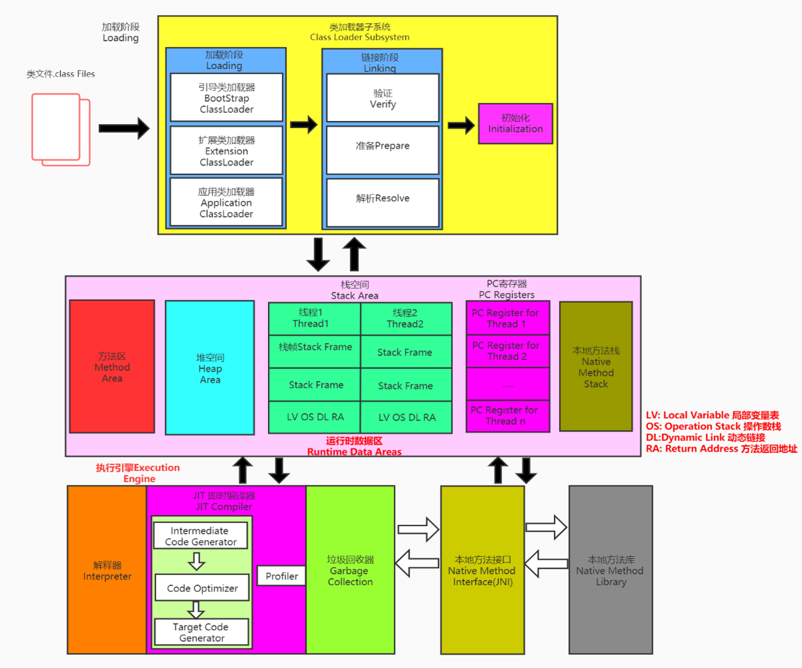
详图
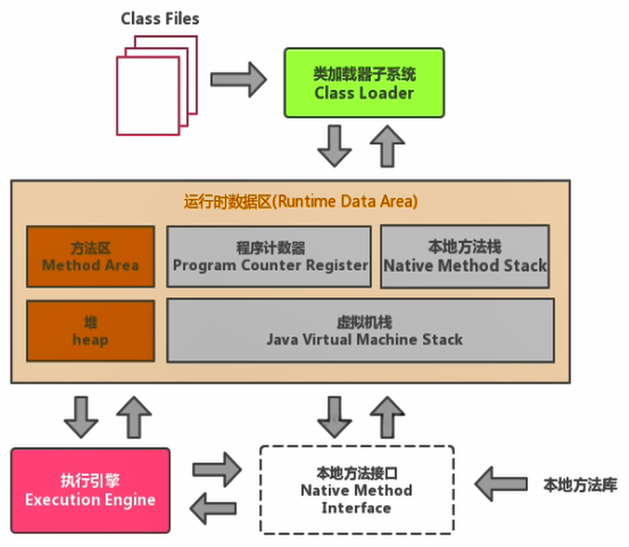
注意：方法区只有 HotSpot 虚拟机有，J9，JRockit 都没有
如果自己想手写一个 Java 虚拟机的话，主要考虑哪些结构呢？
- 类加载器
- 执行引擎
类加载器子系统
-
类加载器子系统负责从文件系统或者网络中加载Class文件，class文件在文件开头有特定的文件标识。
-
ClassLoader 只负责 class 文件的加载，至于它是否可以运行，则由 Execution Engine 决定。
-
加载的类信息存放于一块称为方法区的内存空间。除了类的信息外，方法区中还会存放运行时常量池信息，可能还包括字符串字面量和数字常量（这部分常量信息是Class文件中常量池部分的内存映射）
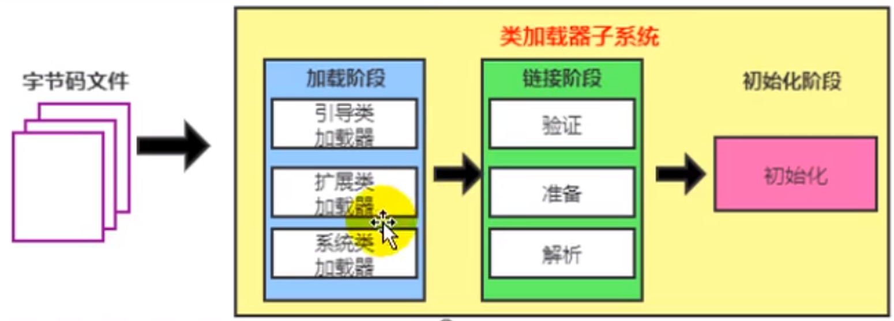
类加载器ClassLoader角色
- class file 存在于本地硬盘上，可以理解为设计师画在纸上的模板，而最终这个模板在执行的时候是要加载到JVM当中来根据这个文件实例化出n个一模一样的实例。
- class file 加载到 JVM 中，被称为 DNA 元数据模板（在下图中就是内存中的Car Class），放在方法区。
- 在 .class 文件 –> JVM –> 最终成为元数据模板，此过程就要一个运输工具（类装载器Class Loader），扮演一个快递员的角色。
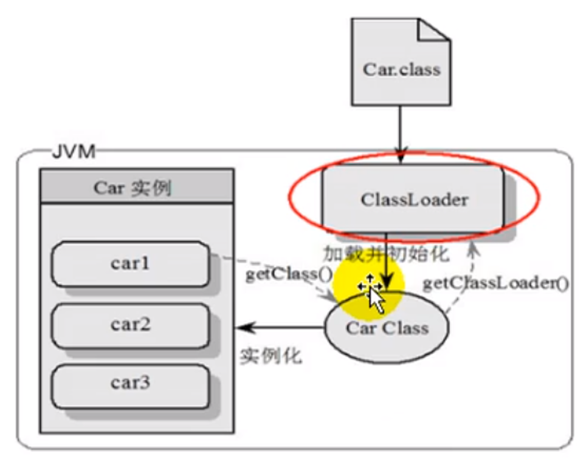
2-类加载过程
概述
public class HelloLoader {
public static void main(String[] args) {
System.out.println("谢谢ClassLoader加载我....");
System.out.println("你的大恩大德，我下辈子再报！");
}
}它的加载过程是怎么样的呢?
- 执行 main() 方法（静态方法）就需要先加载main方法所在类 HelloLoader
- 加载成功，则进行链接、初始化等操作。完成后调用 HelloLoader 类中的静态方法 main
- 加载失败则抛出异常
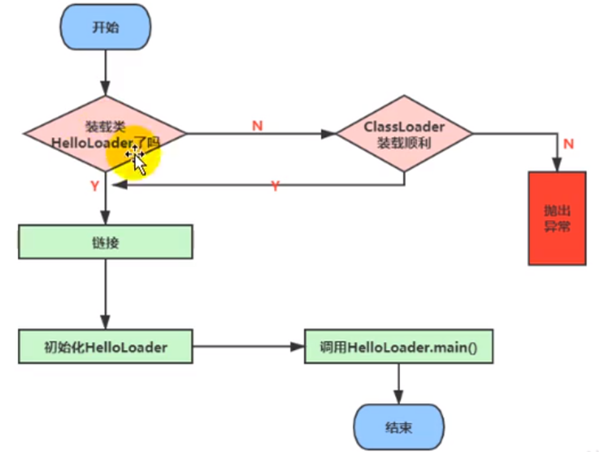
完整的流程图如下所示：
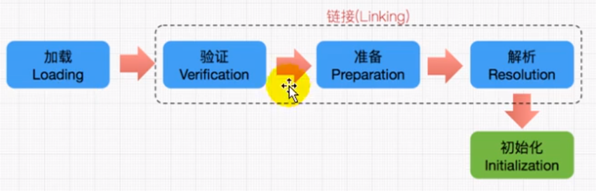
加载(Loading)阶段
加载：
-
通过一个类的全限定名获取定义此类的二进制字节流
-
将这个字节流所代表的静态存储结构转化为方法区的运行时数据结构
-
在内存中生成一个代表这个类的 java.lang.Class 对象，作为方法区这个类的各种数据的访问入口
加载class文件的方式：
- 从本地系统中直接加载
- 通过网络获取，典型场景：Web Applet
- 从 zip 压缩包中读取，成为日后 jar、war 格式的基础
- 运行时计算生成，使用最多的是：动态代理技术
- 由其他文件生成，典型场景：JSP 应用从专有数据库中提取 .class 文件，比较少见
- 从加密文件中获取，典型的防 Class 文件被反编译的保护措施
链接(Linking)阶段
验证(Verify)
- 目的在于确保 Class 文件的字节流中包含信息符合当前虚拟机要求，保证被加载类的正确性，不会危害虚拟机自身安全
- 主要包括四种验证，文件格式验证，元数据验证，字节码验证，符号引用验证。
准备(Prepare)
- 为类变量（static变量）分配内存并且设置该类变量的默认初始值，即零值
- 这里不包含用 final 修饰的 static，因为 final 在编译的时候就会分配好了默认值，准备阶段会显式初始化
- 注意：这里不会为实例变量分配初始化，类变量会分配在方法区中，而实例变量是会随着对象一起分配到 Java 堆中
解析(Resolve)
-
将常量池内的符号引用转换为直接引用的过程
-
事实上，解析操作往往会伴随着JVM在执行完初始化之后再执行
-
符号引用就是一组符号来描述所引用的目标。符号引用的字面量形式明确定义在《java虚拟机规范》的 class 文件格式中。直接引用就是直接指向目标的指针、相对偏移量或一个间接定位到目标的句柄
-
解析动作主要针对类或接口、字段、类方法、接口方法、方法类型等。对应常量池中的
CONSTANT_Class_info、CONSTANT Fieldref_info、CONSTANT_Methodref_info等
初始化(Initialization)阶段
-
初始化阶段就是执行类构造器方法
<clinit>()的过程 -
此方法不需定义，是 javac 编译器自动收集类中的所有类变量的赋值动作和静态代码块中的语句合并而来。也就是说，当我们代码中包含 static 变量的时候，就会有 clinit 方法 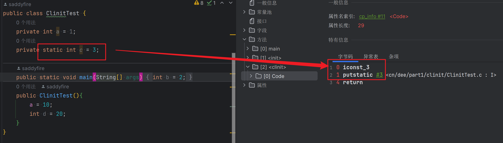
-
<clinit>()方法中的指令按语句在源文件中出现的顺序执行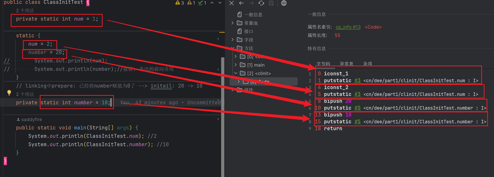
-
<clinit>()不同于类的构造器。（关联：构造器是虚拟机视角下的<init>()）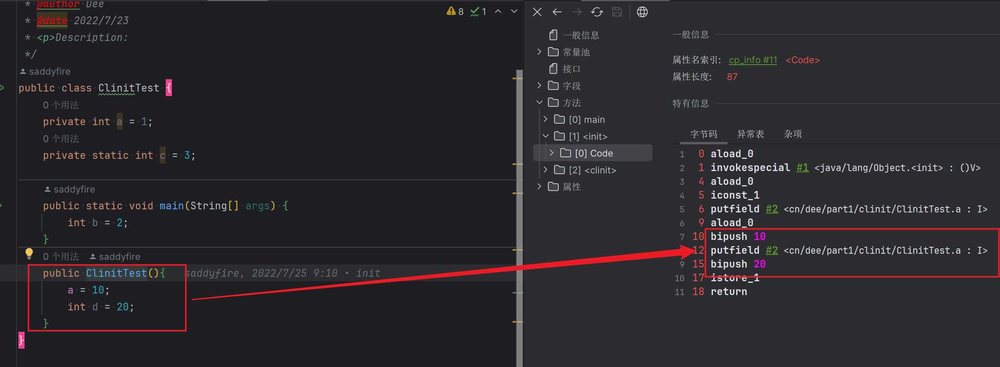
-
若该类具有父类，JVM 会保证子类的
<clinit>()执行前，父类的<clinit>()已经执行完毕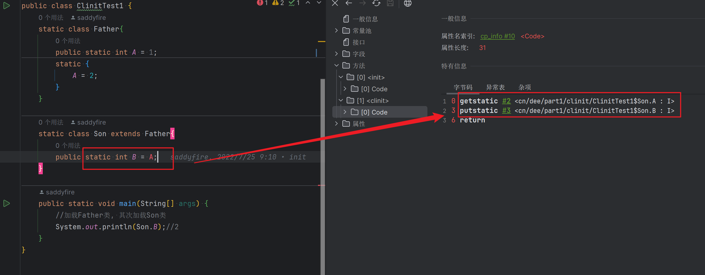
-
虚拟机必须保证一个类的
<clinit>()方法在多线程下被同步加锁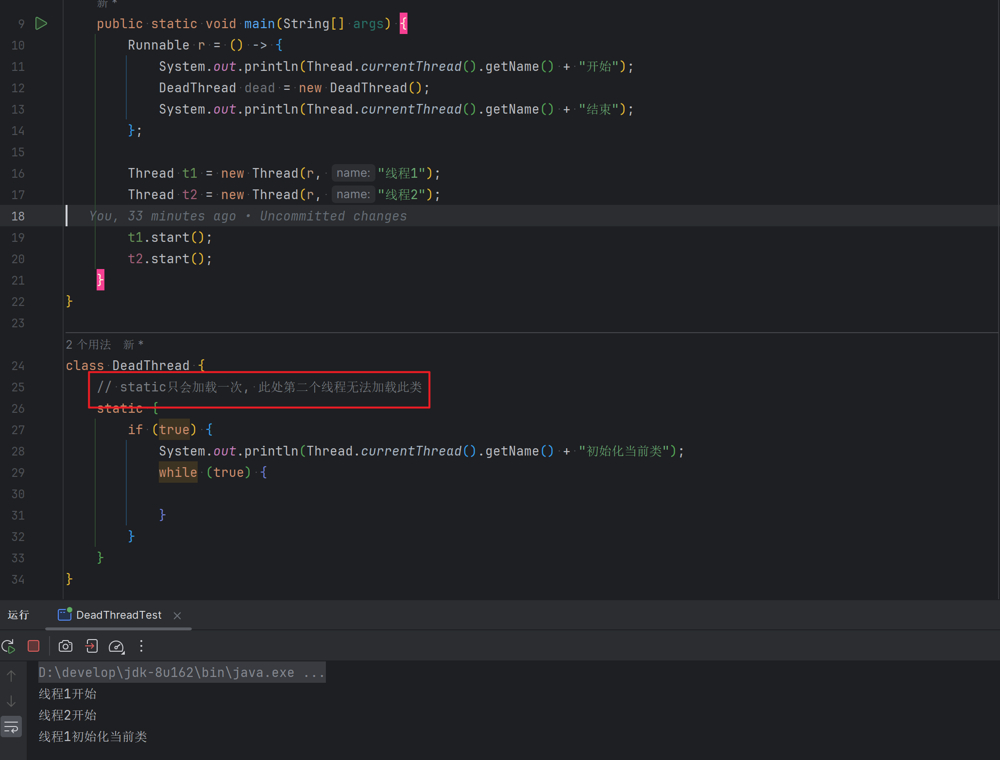
3-类加载器的分类
-
JVM 严格来讲支持两种类型的类加载器 。分别为引导类加载器（Bootstrap ClassLoader）和自定义类加载器（User-Defined ClassLoader）
-
从概念上来讲，自定义类加载器一般指的是程序中由开发人员自定义的一类类加载器，但是Java虚拟机规范却没有这么定义，而是将所有派生于抽象类ClassLoader的类加载器都划分为自定义类加载器
-
无论类加载器的类型如何划分，在程序中我们最常见的类加载器始终只有3个，如下所示
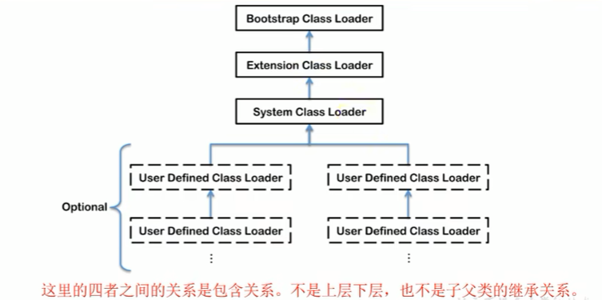
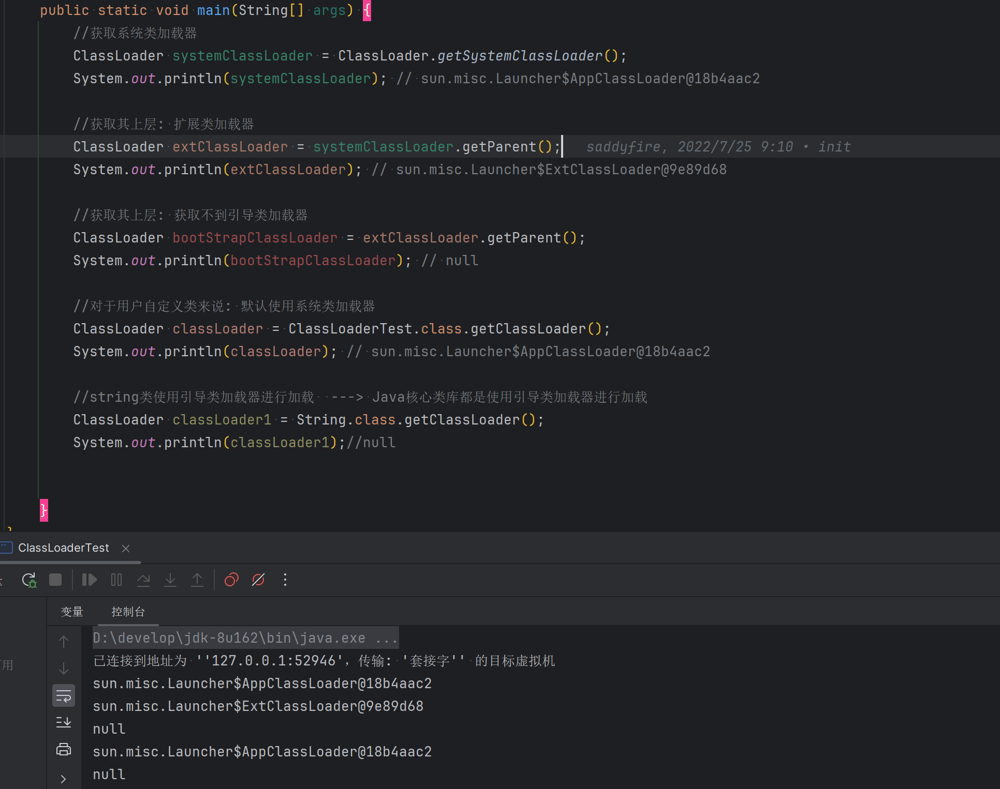
虚拟机自带的加载器
启动类加载器
启动类加载器（引导类加载器，Bootstrap ClassLoader）
- 这个类加载使用 C/C++ 语言实现的，嵌套在JVM内部
- 它用来加载Java的核心库（JAVA_HOME/jre/lib/rt.jar、resources.jar 或 sun.boot.class.path 路径下的内容），用于提供JVM自身需要的类
- 并不继承自 java.lang.ClassLoader，没有父加载器
- 加载扩展类和应用程序类加载器，并作为他们的父类加载器
- 出于安全考虑，Bootstrap 启动类加载器只加载包名为 java、javax、sun 等开头的类
扩展类加载器
扩展类加载器（Extension ClassLoader）
- Java 语言编写，由 sun.misc.Launcher$ExtClassLoader 实现
- 派生于 ClassLoader 类
- 父类加载器为启动类加载器
- 从 java.ext.dirs 系统属性所指定的目录中加载类库，或从 JDK 的安装目录的 jre/lib/ext 子目录（扩展目录）下加载类库。如果用户创建的 JAR 放在此目录下，也会自动由扩展类加载器加载
系统类加载器
应用程序类加载器（也称为系统类加载器，AppClassLoader）
- Java 语言编写，由 sun.misc.LaunchersAppClassLoader 实现
- 派生于 ClassLoader 类
- 父类加载器为扩展类加载器
- 它负责加载环境变量 classpath 或系统属性 java.class.path 指定路径下的类库
- 该类加载是程序中默认的类加载器，一般来说，Java 应用的类都是由它来完成加载
- 通过 classLoader.getSystemclassLoader() 方法可以获取到该类加载器
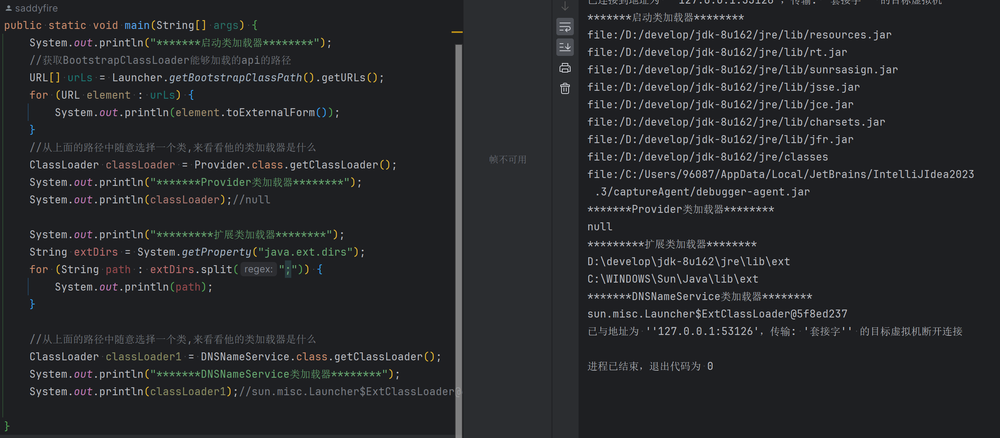
用户自定义类加载器
什么时候需要自定义类加载器？
- 隔离加载类（比如说我假设现在 Spring 框架，和 RocketMQ 有包名路径完全一样的类，类名也一样，这个时候类就冲突了。不过一般的主流框架和中间件都会自定义类加载器，实现不同的框架，中间价之间是隔离的）
- 修改类加载的方式
- 扩展加载源（还可以考虑从数据库中加载类，路由器等等不同的地方）
- 防止源码泄漏（对字节码文件进行解密，自己用的时候通过自定义类加载器来对其进行解密）
用户自定义类加载器实现步骤
- 开发人员可以通过继承抽象类java.lang.ClassLoader类的方式，实现自己的类加载器，以满足一些特殊的需求
- 在JDK1.2之前，在自定义类加载器时，总会去继承ClassLoader类并重写loadClass()方法，从而实现自定义的类加载类，但是在JDK1.2之后已不再建议用户去覆盖loadClass()方法，而是建议把自定义的类加载逻辑写在findclass()方法中
- 在编写自定义类加载器时，如果没有太过于复杂的需求，可以直接继承URIClassLoader类，这样就可以避免自己去编写findclass()方法及其获取字节码流的方式，使自定义类加载器编写更加简洁。
关于ClassLoader
ClassLoader 类，它是一个抽象类，其后所有的类加载器都继承自ClassLoader（不包括启动类加载器）
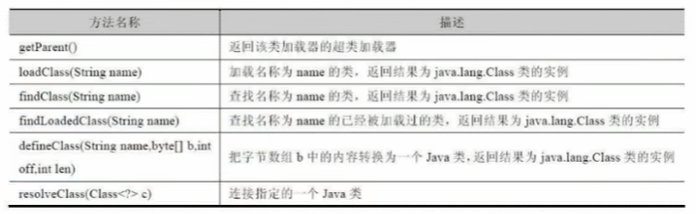
sun.misc.Launcher 它是一个 Java 虚拟机的入口应用
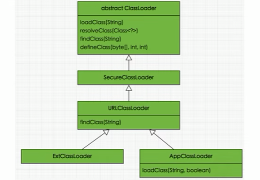
获取ClassLoader途径
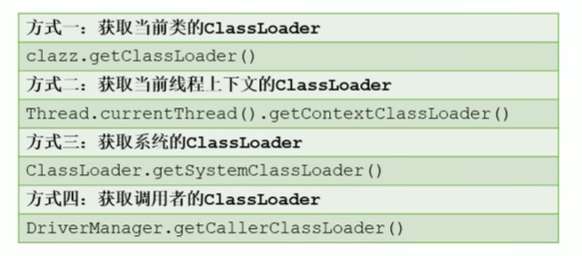
4-双亲委派机制
Java 虚拟机对 class 文件采用的是按需加载的方式，也就是说当需要使用该类时才会将它的 class 文件加载到内存生成 class 对象。而且加载某个类的 class 文件时，Java 虚拟机采用的是双亲委派模式，即把请求交由父类处理，它是一种任务委派模式
工作原理:
- 如果一个类加载器收到了类加载请求，它并不会自己先去加载，而是把这个请求委托给父类的加载器去执行；
- 如果父类加载器还存在其父类加载器，则进一步向上委托，依次递归，请求最终将到达顶层的启动类加载器；
- 如果父类加载器可以完成类加载任务，就成功返回，倘若父类加载器无法完成此加载任务，子加载器才会尝试自己去加载，这就是双亲委派模式。
- 父类加载器一层一层往下分配任务，如果子类加载器能加载，则加载此类，如果将加载任务分配至系统类加载器也无法加载此类，则抛出异常
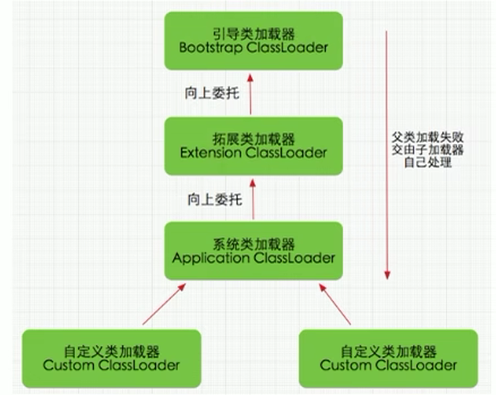
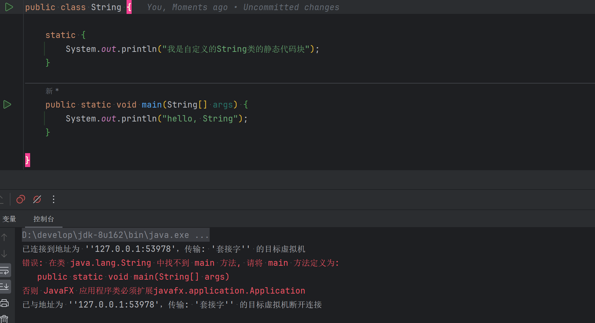
双亲委派机制优势
通过上面的例子，我们可以知道，双亲机制可以
-
避免类的重复加载
-
保护程序安全，防止核心API被随意篡改
-
自定义类：自定义 java.lang.String 没有被加载。
-
自定义类：java.lang.ShkStart（报错：阻止创建 java.lang开头的类）
-
沙箱安全机制
- 自定义 String 类时：在加载自定义 String 类的时候会率先使用引导类加载器加载，而引导类加载器在加载的过程中会先加载jdk自带的文件（rt.jar包中java.lang.String.class），报错信息说没有 main 方法，就是因为加载的是 rt.jar 包中的 String 类。
- 这样可以保证对 Java 核心源代码的保护，这就是沙箱安全机制。